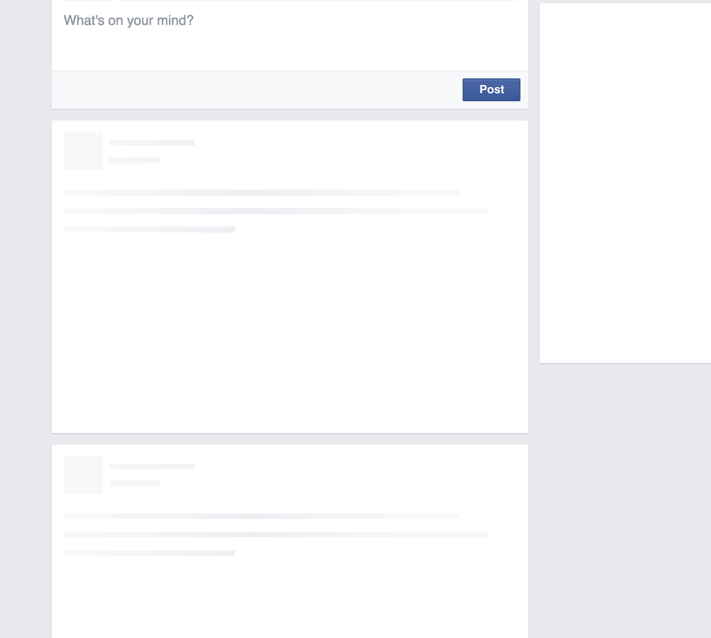

Code Weekend Spring 2k19
Building your first web app and hardware project
Code Weekend is scheduled for Saturday and Sunday, January 26th and 27th (event details here) and will comprise of three workshops to help participants build their very own web app or hardware project. Participants are expected to have very minimal coding or hardware experience as we will be carefully explaining everything we do as we go. This should be extremely helpful to first-time hackers (a fun term we use for people that build things!) especially with PennApps scheduled for the weekend after. If you haven't already, check it out - it's a great way to jump in the deep end and expose yourself to the incredible world of building things (and actually they're doing great stuff for first-time hackers as well).
These workshops have been organized by the Computer Science Society (CSS), PennApps, and many talented individuals. Student mentors will be around to help participants as we go through these highly interactive, live-coding-based workshops.
You can find the workshops from the previous Code Weekend (Fall 2018) here.
Workshops
Intro to JavaScript
Learn about the fundamentals of using JavaScript to create rich web applications. Students will be able to walk away with an understanding of the role of JavaScript with respect to HTML and CSS.
Building PennInTouch with Ruby on Rails
In this workshop we will be building a psuedo-PennInTouch where users will be able to add students/courses. We will start with a brief intro into Ruby on Rails before diving into coding the site.
Getting Started with Arduino by Penn Architechs
Have you ever wondered how you can write software that controls hardware in ways that you can see with your own eyes? Designed for curious students without any background in using Arduino, the workshop will introduce first principles in designing your own circuits and systems using an Arduino. After this workshop, you will have the knowledge to go out and build your own projects with Arduino!
In preparation for the workshop, please come with the Arduino IDE installed on your laptop so that we can help with any installation issues and jump right into the workshop!
Introduction to Web Development
An Introduction to (the) Life (of a Developer)
When coding, you'll run into tons of small problems and errors that you don't initially know how to solve. This is completely normal. In order to write solutions to every problem that you could hypothetically run into, you'd need a manual taller than the Empire State building.
Thankfully, we all have a resource with more information that we can possibly imagine - teh interwebz. You've probably searched for things using Google before, but most coding problems can actually be solved by effectively Googling your issue. Here are some tips for finding the answers to all your problems on the Internet:
- Be descriptive. If you're searching for what's causing an error then you can try just searching for the entire error message, or try describing what happened. For example, "Homebrew does not install through the terminal on OSX Yosemite" is a better search query than "homebrew not working", though the best search query is often some combination of plain text and the actual error message. Often error codes make great search queries, as long as they are contextualized (i.e. with the name of the language/environment).
- Along with that vein, use as many specific words as possible. You can use complete sentences if you'd like, but normally four or five very descriptive nouns/verbs is ideal, and you won't throw Google off-track by searching for unnecessary things. For example, you try to put a banner at the top of a web page, but there's a weird white border around the entire page. Googling "there's a weird white border around the entire page" isn't helpful. Always start with the name of the language you think is suspect if you can (in this case, it's CSS, since all style things on the page are controlled by CSS). Then, describe the problem with just a few words. Here, I used "CSS no page border". The first result was really helpful and ended up solving my problem.
These resources are also awesome:
- Stack Overflow is the best. Search results that link here are often the most helpful, and you can almost always find someone who's had the same problem as you on here. You should mostly refrain from posting questions to Stack Overflow since odds are your question has already been answered there somewhere.
- If you're looking for syntax, or lists of inbuilt functions, then look for the Official Documentation for the language in question. W3Schools is great for HTML, CSS, and Javascript.
- Bentobox is a great all-in-one resource to learn to code for a huge number of technologies.
- Code Academy has some great tutorials. The lessons for each language can get tedious, but the tutorials where you build actual things are pretty great. If you're looking for a good introduction to HTML/CSS, General Assembly's Dash is probably the best place to start.
An Introduction to the Web
There's pretty much three things happening every time you open a website:
- Your browser looks up an address (say google.com) and follows it back to its home - the server which actually runs the website. This server is basically just a computer, albeit a huge, immensely powerful computer possibly comprising acres of computer hardware connected together. For these workshops though, that's just going to be your laptop...we don't provide that kind of computing power.
- This server is what we call the backend. This server now processes your request - it could be a request to view the website or something more complicated like an attempt to log in to a dashboard - and sends a response back to your computer. This server will often be programmed in languages such as Python, Ruby on Rails, even Java (but not as much these days). Node.JS is a framework that lets us use Javascript on the backend as well as the frontend.
- Your computer now reads this response and converts it into the web page you actually see on your computer. This last bit of conversion is what we call the frontend doing its work.

So basically, any work done on a server has been programmed into the backend, while anything done inside your browser has been programmed into the frontend. These are the two main components of any website.
You'll see later on that requests aren't just made to the server when we first open the website; it's often faster to make smaller requests first, load the important parts of a web page and then request additional bits of information when they're needed (think Facebook's Newsfeed). It's also used when we do things like attempt to log in to a website. This is one of the reasons why Javascript is so useful as a frontend programming language, as it allows us to do these kinds of things very easily and update the web page immediately without having to refresh the page.

What is Terminal/Command Prompt?

Terminal (or Command Prompt on Windows) is basically a way for us to access the Command Line. This gives us access to a wonderful variety of things that we can do. We will be spending a good amount of time this weekend in here, so let's take some time to get used to it.
Once you fire up Terminal or Command Prompt (on Windows, you'll later need to run cmd.exe by right-clicking on the shortcut and click Run as Administrator, you'll know it's running as Admin if your path ends in ../system32), here are a few simple commands that you can type:
ls(DIRon Windows) lists all the files in the current foldercdallows you to change directory. Socd Documentswill move into the folder Documents if there is such a folder in the current directory. You can check this by usingls(DIRon windows). To move up a directory, say back to where you were before you went into Documents, type incd ../.pwdprints out the current path you've traversed in the file system. It's particularly helpful once you've usedcda few times, and aren't sure where you are anymore.mkdirallows you to make a folder in the current directory. Somkdir Such Magicmakes a folder named 'Such Magic'.mv(moveon windows) will let you move files and folders. In Terminal you can domv ~/Desktop/MyFile.rtf /Volumes/Backup/MyFolderto move MyFile.rtf. On Windowsmove c:\windows\temp\*.* c:\tempwill move everything fromC:\windows\temptoC:\temp.*works as a wildcard operator here. Careful with this one - you may not want to move things around haphazardly.
Thanks for being a part of Code Weekend!
We hope you enjoyed these workshops as much as we enjoyed making them for you.
Please do give members of the Code Weekend Team feedback on how to improve these workshops in the future and tell your friends what you've learned!